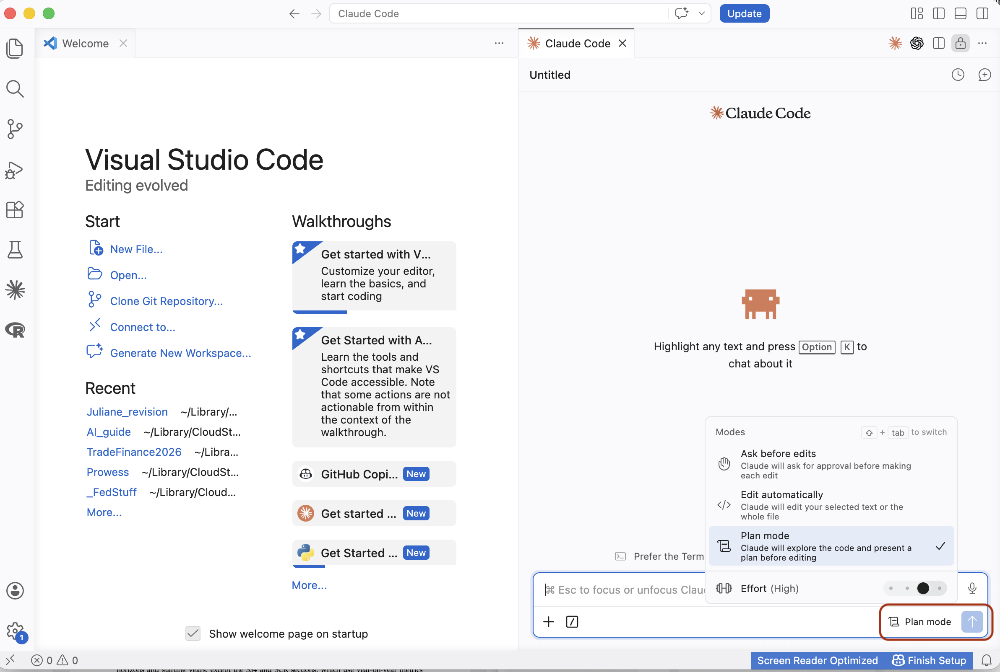

The Core Workflow
Plan, review, execute, verify. The loop that keeps research integrity intact.
This is the most important page in the guide. Everything else supports this loop. If you internalize one thing, make it this: plan, review, execute, verify.
The Loop
Every task follows the same cycle:
The temptation is to skip to step 3. AI is fast, so you want to let it run. Resist.
Ask Claude to execute immediately. Fast start, slow end. Code runs but produces wrong results. You spend 1-2 hours debugging.
Ask Claude to plan. Review. Correct. Execute. 10 minutes upfront, clean execution, debugging is rare.
Plan Mode: Your Safety Net
Plan mode is a built-in Claude Code feature. When activated, Claude will think through the task and describe what it intends to do, without actually doing it. You review the plan, correct it, and only then let it execute.
In VS Code, press Shift+Tab to cycle through Claude Code's modes. Keep pressing until you land on Plan mode. You can confirm it is active by looking at the bottom of the Claude Code panel, where it displays the current mode. You can also type /plan directly, or simply ask: "Plan this out before doing anything."

Claude will produce a step-by-step plan. Read it carefully. Ask yourself:
- Does it understand what I actually want?
- Are the file paths correct?
- Are the variable names correct?
- Is it doing anything I did not ask for?
- What assumptions is it making?
The Review Cycle
After Claude produces a plan, review it. If something is wrong, tell Claude what to fix. It will revise the plan. Review again. Repeat until the plan is correct.
This back-and-forth is not wasted time. It is the core of the workflow. A good plan that survives two rounds of review will execute cleanly. A plan you approved without reading will produce output you cannot trust. Claude Code has a built-in skill for exactly this: type /review-plan and it will systematically stress-test the plan, surface blind spots, and flag missing steps before you commit to execution.
Worked Example: Cleaning a Dataset
Let us walk through the full cycle with a real task. We have a CSV of US monthly unemployment rates from FRED (bundled in data/examples/UNRATE.csv). The task:
- Load the CSV
- Drop observations before 2000
- Compute the annual average unemployment rate
- Save the result as
annual_unrate.csv
Step 1: Ask Claude to plan
Start Claude Code in plan mode and describe the task:
/prompt I have a CSV at data/examples/UNRATE.csv with monthly unemployment data from FRED.
Plan an R script that:
- Loads the CSV
- Drops observations before 2000
- Computes annual average unemployment rate
- Saves the result as annual_unrate.csvStep 2: Review the plan, catch the error
Claude will produce a plan. Read it carefully. Here is what will likely go wrong:
Claude will assume the unemployment rate column is called something like unemployment_rate. But FRED names it UNRATE. This is exactly the kind of silent, plausible mistake from the Philosophy page. The plan looks correct; the variable name is wrong.
Tell Claude:
The variable is called UNRATE, not unemployment_rate. Fix the plan.Step 3: Execute
Once the plan is correct, tell Claude to execute. It will write and run the R script.
Step 4: Verify
Do not just accept the output. Check it:
- Open
annual_unrate.csv. Does it have 24-26 rows (years 2000 through 2024/25)? - Do the values make sense? The unemployment rate peaked around 9.5% in 2010 and was around 3.5% in 2019 and 2023.
- Eyeball a few values against FRED's interactive chart.
- Did Claude silently drop rows with missing values instead of flagging them?
Where Could It Be Wrong?
After any execution, run through this checklist:
- File paths: do the files it references actually exist?
- Variable names: do they match the actual data, not what Claude assumed?
- Sample size: how many observations went in vs. came out? Did it silently drop data?
- Scope: did it do exactly what you asked, or did it add things?
- Assumptions: what did it assume that you did not state? Are those assumptions correct?
Iteration: Refining the Plan
When something is wrong in the plan or the output, do not start over. Tell Claude exactly what to fix. Good correction prompts are specific:
"This is wrong, try again."
"The merge dropped 40% of observations. Use a 1:m merge on firm_id and keep all observations from the master dataset."
The more specific your correction, the more likely Claude gets it right on the next pass. Vague corrections lead to vague fixes.
When to Let It Execute
Only approve execution when all three conditions are met:
- The plan is verified: you have read every step and it matches your intent.
- The scope is bounded: you know exactly what files it will create or modify.
- The output is reversible: if it breaks something, you can undo it (via git, backup, or because the original files are untouched).
If any of these is missing, go back to the plan.
Post-Execution Verification
After Claude edits files or produces output, verify what actually changed. The best tool for this is git diff:
git diffThis shows you every line that was added, removed, or modified. Read it. If you do not understand a change, ask Claude to explain it. If you did not ask for a change and it is there, something went wrong.
The Independence Principle in Practice
From the Philosophy page: you cannot ask the same conversation to both produce and verify. Here is what that looks like in practice.
After Claude produces output, ask it to spawn an independent agent for the review. The agent gets a fresh context with no memory of how the code was written:
/prompt Run a fresh, independent agent to review this R script.
Check for: correct variable names against the data,
whether the merge preserves all observations, correct fixed effects,
correct clustering. Flag anything suspicious.The agent approaches the code cold, like a coauthor reading your work for the first time. It will catch things the current conversation is biased to defend. You stay in the same session; no need to manually clear or start over.
Next: make Claude adapt to how you specifically work.